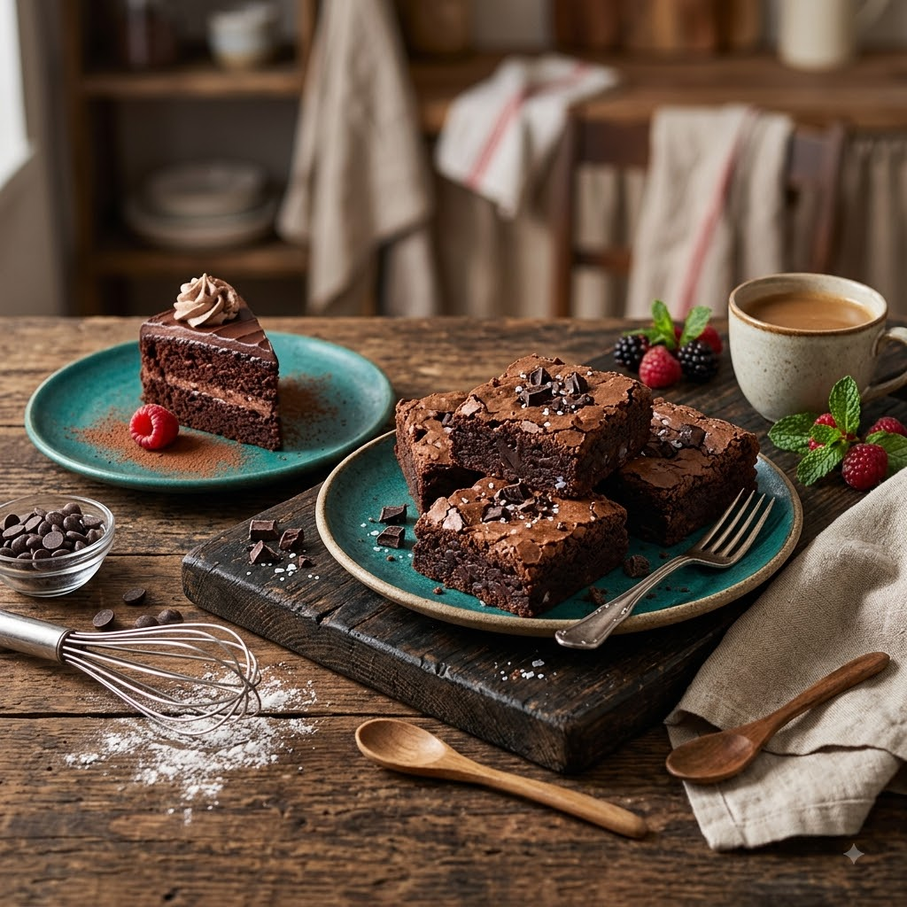

Brownie de Air Fryer Imperdível
Por: José C.
Boas-vindas ao meu novo blog! Aqui vou compartilhar dicas de culinária e curiosidades da área de gastronomia pessoal. E hoje vou ensinar a receita do meu delicioso brownie de Air Fryer!
🍫 Ingredientes
- 2 colheres de sopa de manteiga derretida
- 2 colheres de sopa de açúcar
- 1 gema de ovo
- 2 colheres de sopa de cacau em pó
- 2 colheres de sopa de farinha de trigo
- 1 pitada de sal
- Quadrados de chocolate picado para rechear (opcional)
🥣 Modo de Preparo
- Preaqueça a air fryer a 160°C por 3 minutos.
- No próprio potinho que vai à air fryer, misture a manteiga derretida com o açúcar.
- Adicione a gema e mexa até incorporar bem.
- Junte o cacau em pó, a farinha de trigo e o sal, misturando até obter uma massa homogênea.
- Afunde os pedaços de chocolate no meio da massa.
- Asse a 160°C por 8 a 10 minutos (o topo deve estar firme e o centro levemente cremoso).